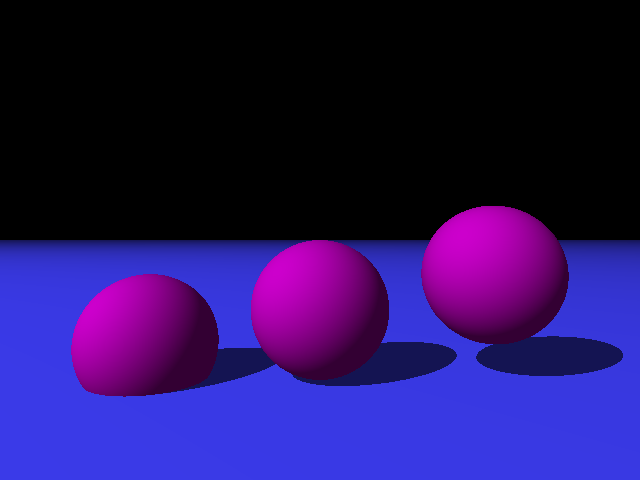
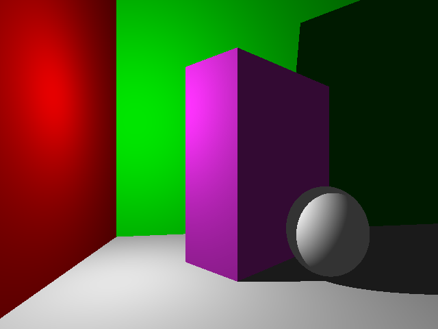

CPE 473: Ray Tracer
Cody Rhoads
Final Feature
For my final feature I chose to implement ambient occlusion. I wanted to add
some feature that added more realism to shading; in particular, I felt that
intersecting objects were lacking in the realism department. There wasn't
any indication of a transition between the two objects. AO helped to fix
that issue by darkening the area where the objects intersect.
Resources
I only used the provided notes on ambient occlusion, as well as previous
knowledge about the method of implementing Monte Carlo global illumination.
Software Design Implementation
When first starting the project, I had each object calculating its own
shading. However, it quickly became apparent that this was incredibly
redundant and inefficient. This led to the creation of the Shader.cpp class,
which handled shading based on a given ray.
The primary method in Shader is getShadedColor(), a recursive method that,
as the name implies, returns the shaded color of whatever the ray intersected.
As features such as reflectance, refraction, and global illumination were
added, this method became dense and unorganized.
To fix this issue, I extracted the implementations of these features into other
methods within Shader. Thanks to these methods, getShadedColor() is much easier
to read. Instead of having to decipher the implementations of features such as
Monte Carlo global illumination or Blinn Phong, they are abstracted into
appropriately-named methods like findAmbientMonteCarlo() and
findLocalColorBlinnPhong(). This greatly enhances the legibility, and in turn
the quality, of the class as a whole.
Screenshots
| With Ambient Occlusion |
Without Ambient Occlusion |
|
 |
|
 |
 |
 |